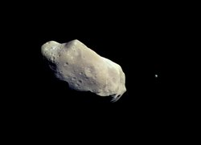
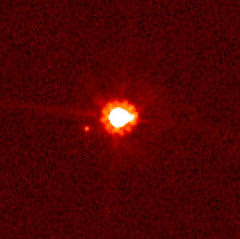
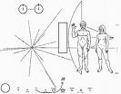

Quiz1
Quiz over! See the Answers page.
Winners:
Mudit Jain (Y5273) - 17Q1. Why does Venus have very shallow craters ?
Q2. The image below is that of an asteroid and it's moon (yes asteroids have
moons! ) Name the asteroid and the moon.

Q3. What object looks like a star but gives off the energy of hundreds of galaxies?
Q4. One of the strangest observatories is located in a mine in South Dakota, USA. What does it observe?
Q5. The object shown in the image is a highly luminous hypergiant double star. Estimates of its mass range from 100–150 times the mass of the Sun, and its luminosity is about four million times that of the Sun.
What is it?
Q13. The nebula below is:

Q14. What is common to the names of the Black family tree in the famous series Harry Potter?
Q15. The object shown below caused a considerable confusion amongst astronomers recently. What is it?

Q16. Which recent (comparatively) event could be used to determine the value of the Astronomical unit (AU) ?
Q15. This planet was hypothesized to exist in an orbit around the Sun even closer than Mercury. It was proposed to explain a small perturbation in Mercury's orbit. It also appears as a star system in the TV series 'Star Trek'. What is it?
Q18. What is this?

By: Saurabh Chatterjee, Rahul Khandelwal
Mail us at astronomy.iitk@gmail.com for suggestions and comments